MDS Gap Filling Quality assessment Hyy
Last updated: 2022-07-05
Checks: 7 0
Knit directory: MeteoECGapFilling/
This reproducible R Markdown analysis was created with workflowr (version 1.7.0). The Checks tab describes the reproducibility checks that were applied when the results were created. The Past versions tab lists the development history.
Great! Since the R Markdown file has been committed to the Git repository, you know the exact version of the code that produced these results.
Great job! The global environment was empty. Objects defined in the global environment can affect the analysis in your R Markdown file in unknown ways. For reproduciblity it’s best to always run the code in an empty environment.
The command set.seed(20220628) was run prior to running the code in the R Markdown file. Setting a seed ensures that any results that rely on randomness, e.g. subsampling or permutations, are reproducible.
Great job! Recording the operating system, R version, and package versions is critical for reproducibility.
Nice! There were no cached chunks for this analysis, so you can be confident that you successfully produced the results during this run.
Great job! Using relative paths to the files within your workflowr project makes it easier to run your code on other machines.
Great! You are using Git for version control. Tracking code development and connecting the code version to the results is critical for reproducibility.
The results in this page were generated with repository version f3c37b1. See the Past versions tab to see a history of the changes made to the R Markdown and HTML files.
Note that you need to be careful to ensure that all relevant files for the analysis have been committed to Git prior to generating the results (you can use wflow_publish or wflow_git_commit). workflowr only checks the R Markdown file, but you know if there are other scripts or data files that it depends on. Below is the status of the Git repository when the results were generated:
Ignored files:
Ignored: .Rproj.user/
Ignored: analysis/figure/
Untracked files:
Untracked: .idea/
Untracked: R/collapsible_hook.R
Untracked: analysis/MDS_multiple_missing_gap_filling_quality.rmd
Untracked: analysis/fragments/MDS_multiple_missing.rmd
Untracked: cache/
Unstaged changes:
Modified: R/REddyProc_tools.R
Modified: R/gaps.R
Modified: analysis/fragments/variable_assess_ERA_gapfilling.rmd
Modified: analysis/fragments/variable_assess_MDS_gapfilling.Rmd
Modified: analysis/index.Rmd
Note that any generated files, e.g. HTML, png, CSS, etc., are not included in this status report because it is ok for generated content to have uncommitted changes.
These are the previous versions of the repository in which changes were made to the R Markdown (analysis/MDS_gap_filling_quality_Hyy.rmd) and HTML (docs/MDS_gap_filling_quality_Hyy.html) files. If you’ve configured a remote Git repository (see ?wflow_git_remote), click on the hyperlinks in the table below to view the files as they were in that past version.
| File | Version | Author | Date | Message |
|---|---|---|---|---|
| html | 4e3acee | Simone Massaro | 2022-07-05 | Build site. |
| Rmd | e8895b5 | Simone Massaro | 2022-07-05 | MDS gap filling Hyytiälä |
Introduction
Marginal Distribution Sampling (MDS)
Assess the quality of the gap filling using the default algorith from REddyProc, a standard implementations of meteo gap filling in the Eddy Covariance.
The variables used for filling gaps are, that are used according to the REddyProc default:
- Shortwave radiation incoming
SW_IN - Air Temperature
Tair - Vapour pressure deficit
VPD
The time window to look for data starts at 7 days and is increased until enough measurements are found
In case the those 3 drivers variables are not available the gap filling procedure falls back to the Mean Diurnal Course (MDC) which uses the average at the same time of the day. There is again a window of increasing size.
Analysed variables
The variables that are gap filled are:
- Temperature
- Shortwave radiation incoming
- Longwave radiation incoming
- Vapour Pressure Deficit
- Pressure
- Precipitation
Instruments accuracy
In order to estimate the quality of the gap filling the RMSE is compared with the instrument accuracy for the sensors.
The list of instruments available at Hainich is available at https://data.icos-cp.eu/objects/_tFsWRgQcO7FkfvOq0OqIC8H
| Variable | Instrument | Accuracy | Reference |
|---|---|---|---|
| Temperature | Vaisala HMP35 | 0.1 °C | https://docs.vaisala.com/access/sources/ud/document?aton_code=B211826EN |
| Humidity | Vaisala HMP35 | 0.8% RH | https://docs.vaisala.com/access/sources/ud/document?aton_code=B211826EN |
| Pressure | Vaisala PTB101B | 0.3 hPa | https://www.vaisala.com/sites/default/files/documents/PTB110-Datasheet-B210681EN.pdf |
| Precipitation | OTT Pluvio2 | 0.1mm | https://www.ott.com/download/leaflet-compact-weighing-precipitation-gauge-ott-pluvio2-s-1/ |
| Shortwave radiation | DeltaT SPN1 | 10 Wm-2 | https://delta-t.co.uk/wp-content/uploads/2016/10/SPN1-Technical-Fact-Sheet-v1.2_d_web.pdf |
Load Data
The data from the Eddy Covariance station in Hainich is used for the analysis.
The data is from the FLUXNET 2015 release
Gap generation
To have a simple test of the accuracy of the gap filling algorith artificial gaps are created and filled using REddyProc algoright that
For each of the variable of interest:
- 50 gaps for each of 30 different lengths (ranging from 1 hour to 60 days) at random location are generated
- the gaps are filled using
REddyProc
generate artificial gaps and then fill the data using REddyProc.
Metrics
and the Root Mean Square Error (RMSE) is computed.
- for the gap period RMSE is calculated
- for each gap length the RMSE and the standard deviation is calculated
Approaches
Tair
The mean RMSE for the temperature ranges between 2 and 5 °C. This can be considered an high, given that the instrument accuracy is 0.1 °C. Moreover, temperature is very important variable for the ecosystem, but also has good temporal autocorrelation which should simplify gap filling.
Variable distribution and details 🔗
| Average RMSE Mean | 3.89 °C |
| Average RMSE Sd | 1.8 °C |
Gap length and RMSE
Average RMSE for dfferent gap lentgth. Shaded area is mean +/- std. dev
| Version | Author | Date |
|---|---|---|
| 4e3acee | Simone Massaro | 2022-07-05 |
Scatter plot measured vs filled
Tair Measured vs gap filled using density plots. All generated gaps are merged in one dataset
| Version | Author | Date |
|---|---|---|
| 4e3acee | Simone Massaro | 2022-07-05 |
Timeseries comparison
Comparison time series between measured and filled Tair for a sample 4 different gap lenths. Gaps longer than a 5 days have been cropped for plotting.
| Version | Author | Date |
|---|---|---|
| 4e3acee | Simone Massaro | 2022-07-05 |
Error distribution for different values
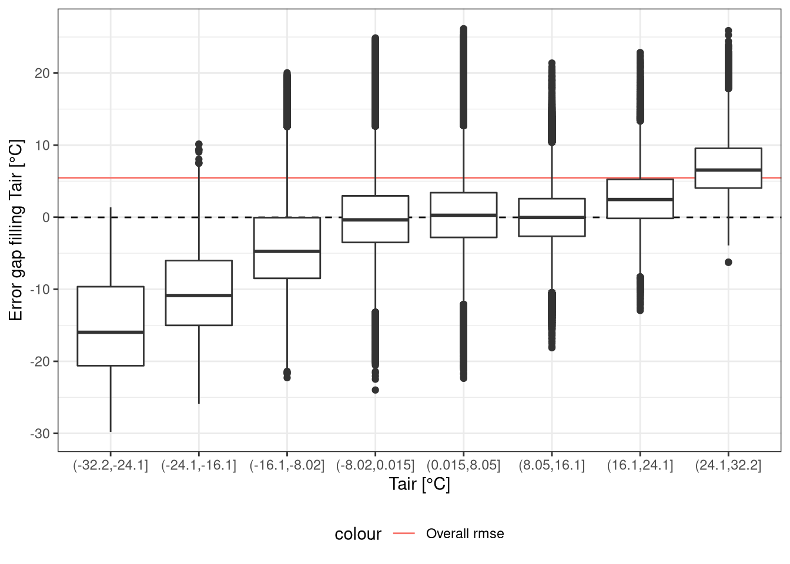
RMSE fo different values
Expand
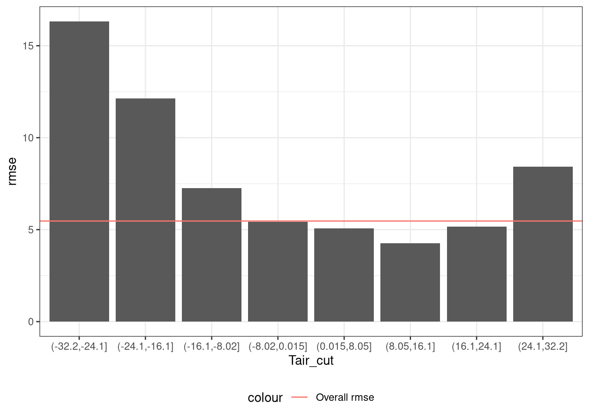Distribution filled vs measurements
Tair distribution of measured and gap filled values for different gap lengths.
| Version | Author | Date |
|---|---|---|
| 4e3acee | Simone Massaro | 2022-07-05 |
Distribution RMSE
Expand
Distrubution of RMSE for a sample of gap lengths (in hours)
| Version | Author | Date |
|---|---|---|
| 4e3acee | Simone Massaro | 2022-07-05 |
SW_IN
The incoming shortwave radiation average RMSE is 100 W m-2 This is roughly 10 times the instrument sensitivity. Incoming shortwave behaviour should also be relatively easy to predict.
This should be checked how it varies across the year, the SW_IN values can be quite different between winter and summer
Variable distribution and details 🔗
| Average RMSE Mean | 75.14 W m-2 |
| Average RMSE Sd | 58.76 W m-2 |
Gap length and RMSE
Average RMSE for dfferent gap lentgth. Shaded area is mean +/- std. dev
| Version | Author | Date |
|---|---|---|
| 4e3acee | Simone Massaro | 2022-07-05 |
Scatter plot measured vs filled
SW_IN Measured vs gap filled using density plots. All generated gaps are merged in one dataset
| Version | Author | Date |
|---|---|---|
| 4e3acee | Simone Massaro | 2022-07-05 |
Timeseries comparison
Comparison time series between measured and filled SW_IN for a sample 4 different gap lenths. Gaps longer than a 5 days have been cropped for plotting.
| Version | Author | Date |
|---|---|---|
| 4e3acee | Simone Massaro | 2022-07-05 |
Error distribution for different values
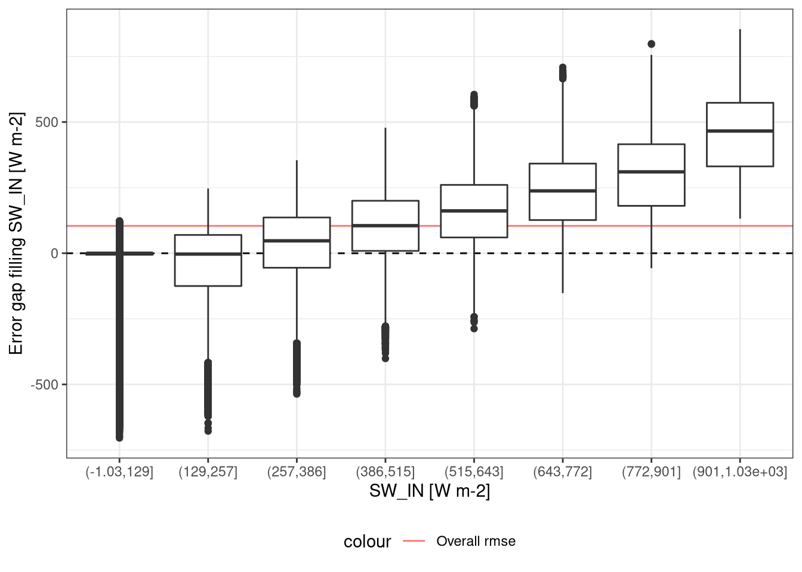
RMSE fo different values
Expand
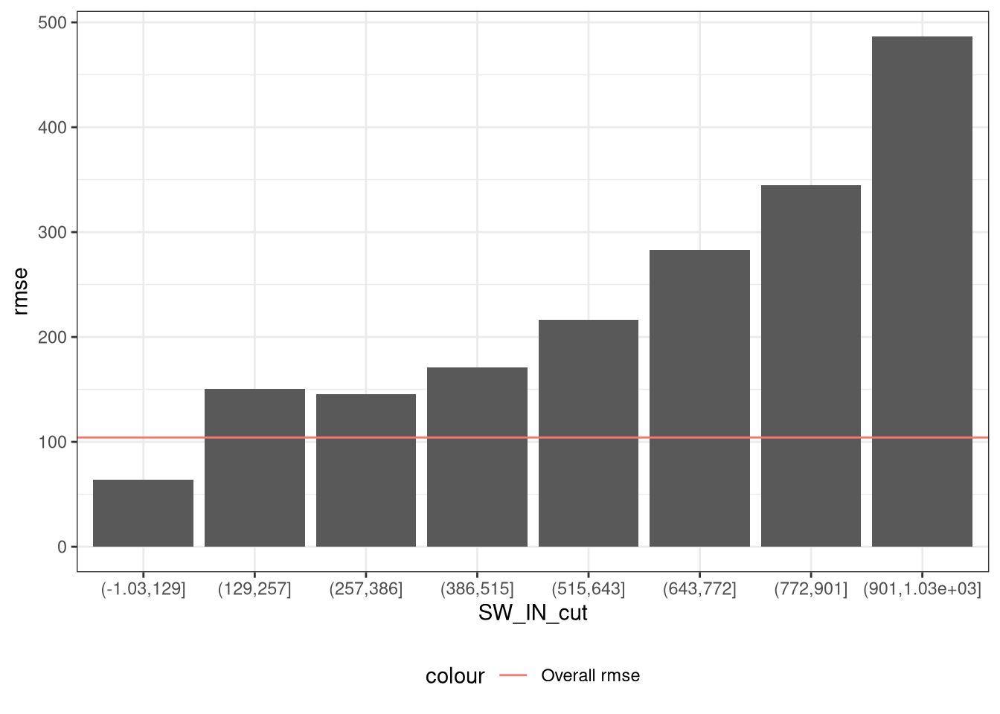Distribution filled vs measurements
SW_IN distribution of measured and gap filled values for different gap lengths.
| Version | Author | Date |
|---|---|---|
| 4e3acee | Simone Massaro | 2022-07-05 |
Distribution RMSE
Expand
Distrubution of RMSE for a sample of gap lengths (in hours)
| Version | Author | Date |
|---|---|---|
| 4e3acee | Simone Massaro | 2022-07-05 |
LW_IN
Variable distribution and details 🔗
| Average RMSE Mean | 26.64 W m-2 |
| Average RMSE Sd | 9.21 W m-2 |
Gap length and RMSE

Average RMSE for dfferent gap lentgth. Shaded area is mean +/- std. dev
| Version | Author | Date |
|---|---|---|
| 4e3acee | Simone Massaro | 2022-07-05 |
Scatter plot measured vs filled
LW_IN Measured vs gap filled using density plots. All generated gaps are merged in one dataset
| Version | Author | Date |
|---|---|---|
| 4e3acee | Simone Massaro | 2022-07-05 |
Timeseries comparison
Comparison time series between measured and filled LW_IN for a sample 4 different gap lenths. Gaps longer than a 5 days have been cropped for plotting.
| Version | Author | Date |
|---|---|---|
| 4e3acee | Simone Massaro | 2022-07-05 |
Error distribution for different values
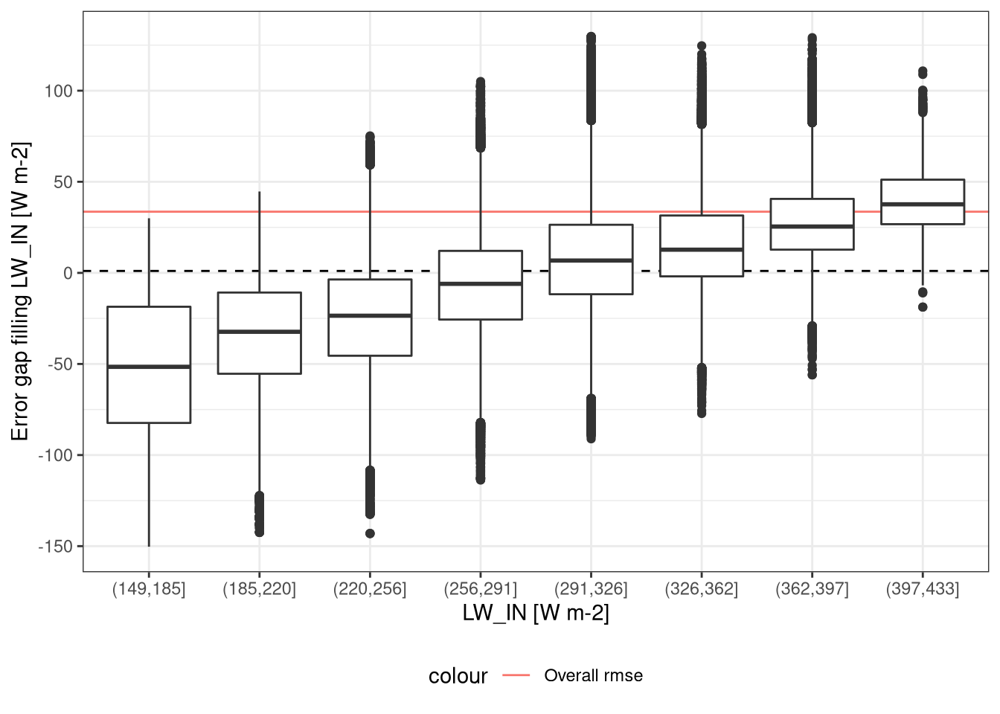
RMSE fo different values
Expand
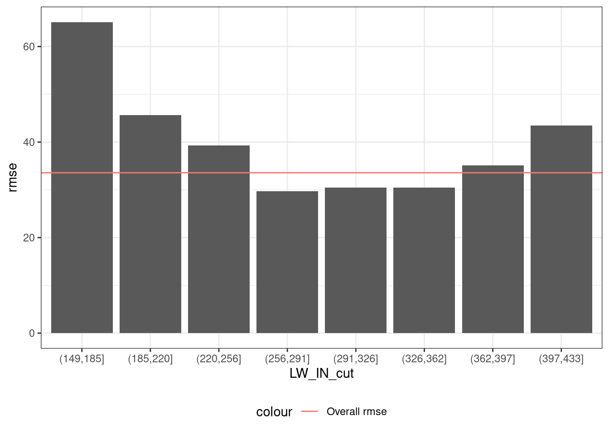Distribution filled vs measurements
LW_IN distribution of measured and gap filled values for different gap lengths.
| Version | Author | Date |
|---|---|---|
| 4e3acee | Simone Massaro | 2022-07-05 |
Distribution RMSE
Expand
Distrubution of RMSE for a sample of gap lengths (in hours)
| Version | Author | Date |
|---|---|---|
| 4e3acee | Simone Massaro | 2022-07-05 |
VPD
The instrument accuracy is relative humidity, while the variable of interest is the Vapour Pressure Deficit (VPD) The VPD is calculated as the difference from the saturation vapour pressure (e_s) and the actual vapour pressure(e_a). So to estimate the accuracy of the VPD measurements we are calculating for each observation the accuracy connected of VPD by transforming the RH measurement. Then the VPD accuracy is averaged over So we are using the formula to estimate the accuracy of the instruments relative to the VPD
get_es <- function(ta) 6.1078 * exp((17.08085 * ta) / (234.175 + ta))
rh2ea <- function(rh, e_s) rh/100 * e_s
get_vpd <- function(e_s, e_a) e_s - e_a
rh_acc <- .8
vpd_acc <- site_data %>%
mutate(e_s = get_es(Tair),
e_a_acc = rh2ea(rh_acc, e_s), # .8 is the accuracy of the instrument
vpd_acc = get_vpd(e_s, e_a_acc)
)
vpd_acc_mean <- mean(vpd_acc$vpd_acc) %>% round(2)| VPD Accuracy | 9.99 hPa |
The average RMSE seems it has a good value, but this is a likely inaccurate due to the high frequency of 0 in the observations
Variable distribution and details 🔗
| Average RMSE Mean | 1.76 hPa |
| Average RMSE Sd | 1.67 hPa |
Gap length and RMSE
Average RMSE for dfferent gap lentgth. Shaded area is mean +/- std. dev
| Version | Author | Date |
|---|---|---|
| 4e3acee | Simone Massaro | 2022-07-05 |
Scatter plot measured vs filled
VPD Measured vs gap filled using density plots. All generated gaps are merged in one dataset
| Version | Author | Date |
|---|---|---|
| 4e3acee | Simone Massaro | 2022-07-05 |
Timeseries comparison

Comparison time series between measured and filled VPD for a sample 4 different gap lenths. Gaps longer than a 5 days have been cropped for plotting.
| Version | Author | Date |
|---|---|---|
| 4e3acee | Simone Massaro | 2022-07-05 |
Error distribution for different values
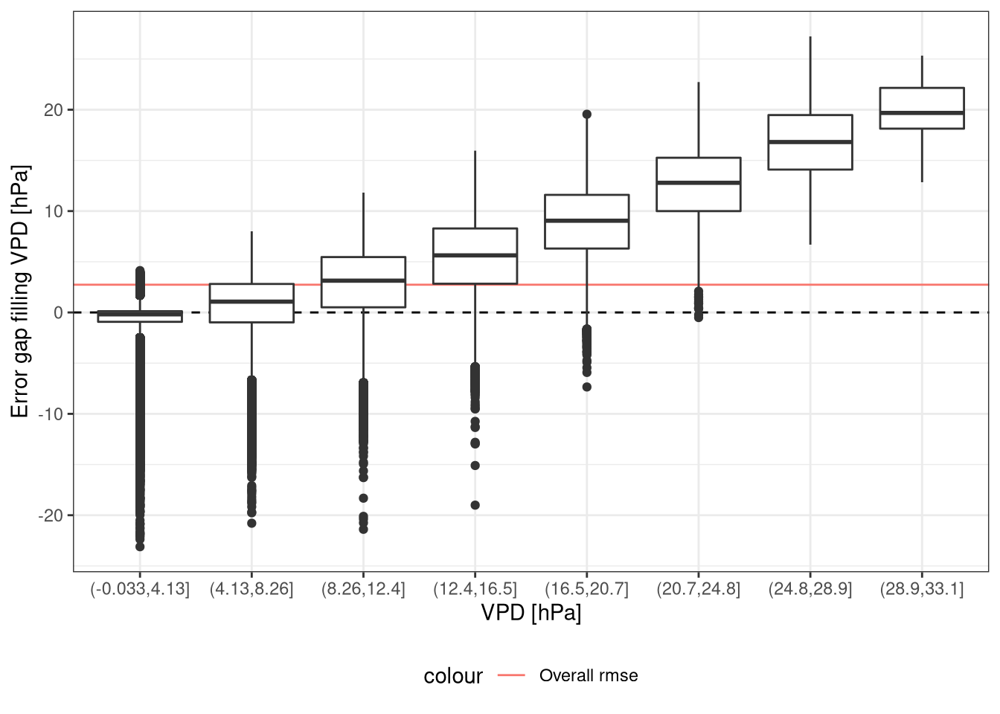
RMSE fo different values
Expand
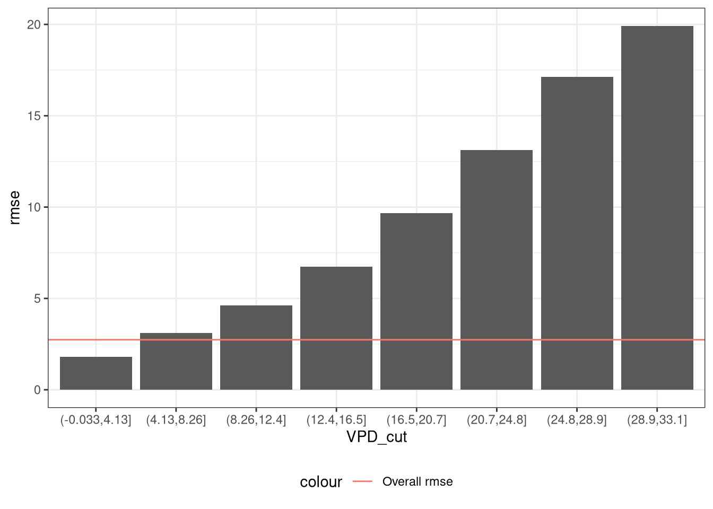Distribution filled vs measurements
VPD distribution of measured and gap filled values for different gap lengths.
| Version | Author | Date |
|---|---|---|
| 4e3acee | Simone Massaro | 2022-07-05 |
Distribution RMSE
Expand
Distrubution of RMSE for a sample of gap lengths (in hours)
| Version | Author | Date |
|---|---|---|
| 4e3acee | Simone Massaro | 2022-07-05 |
P
The Precipitation is a hard variable to gap fill, because is erratic and has a limited connection with the other variables.
The precipitation has a high number of 0 this likely is the reason for the good RMSE.
Comparing sums over a period of time may be a better way to assess precipitations than the point-wise RMSE
Variable distribution and details 🔗
| Average RMSE Mean | 0.14 mm |
| Average RMSE Sd | 0.16 mm |
Gap length and RMSE
Average RMSE for dfferent gap lentgth. Shaded area is mean +/- std. dev
| Version | Author | Date |
|---|---|---|
| 4e3acee | Simone Massaro | 2022-07-05 |
Scatter plot measured vs filled
P Measured vs gap filled using density plots. All generated gaps are merged in one dataset
| Version | Author | Date |
|---|---|---|
| 4e3acee | Simone Massaro | 2022-07-05 |
Timeseries comparison
Comparison time series between measured and filled P for a sample 4 different gap lenths. Gaps longer than a 5 days have been cropped for plotting.
| Version | Author | Date |
|---|---|---|
| 4e3acee | Simone Massaro | 2022-07-05 |
Error distribution for different values
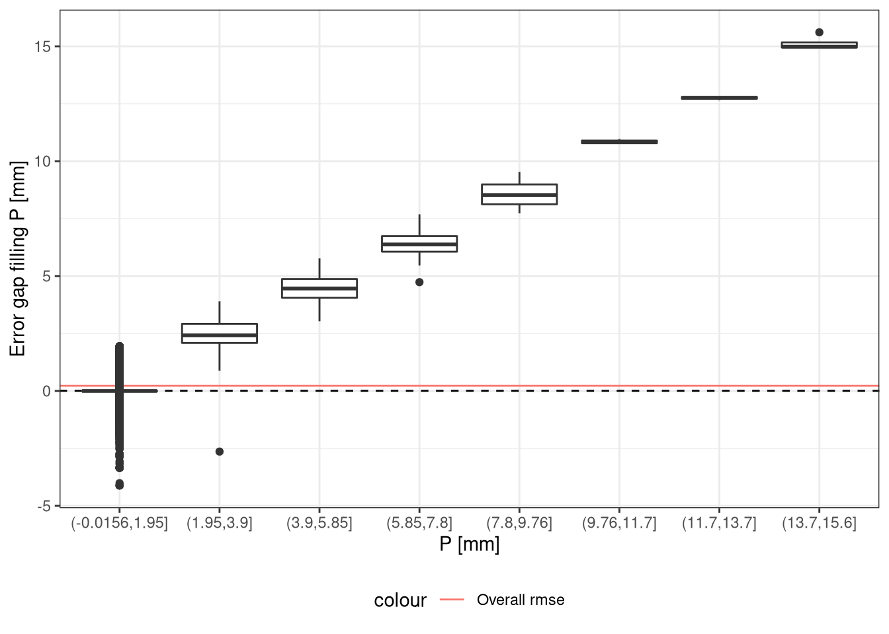
RMSE fo different values
Expand
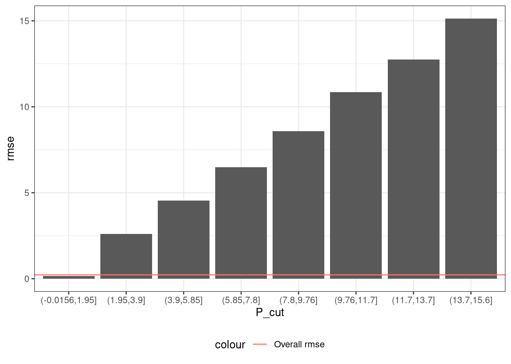Distribution filled vs measurements
P distribution of measured and gap filled values for different gap lengths.
| Version | Author | Date |
|---|---|---|
| 4e3acee | Simone Massaro | 2022-07-05 |
Distribution RMSE
Expand
Distrubution of RMSE for a sample of gap lengths (in hours)
| Version | Author | Date |
|---|---|---|
| 4e3acee | Simone Massaro | 2022-07-05 |
PA
The mean RMSE for the Air Pressure ranges between 0.5 and 1 hPa, which is roughly 3 times the instrument accuracy.
Variable distribution and details 🔗
| Average RMSE Mean | 0.94 hPa |
| Average RMSE Sd | 0.45 hPa |
Gap length and RMSE
Average RMSE for dfferent gap lentgth. Shaded area is mean +/- std. dev
| Version | Author | Date |
|---|---|---|
| 4e3acee | Simone Massaro | 2022-07-05 |
Scatter plot measured vs filled
PA Measured vs gap filled using density plots. All generated gaps are merged in one dataset
| Version | Author | Date |
|---|---|---|
| 4e3acee | Simone Massaro | 2022-07-05 |
Timeseries comparison
Comparison time series between measured and filled PA for a sample 4 different gap lenths. Gaps longer than a 5 days have been cropped for plotting.
| Version | Author | Date |
|---|---|---|
| 4e3acee | Simone Massaro | 2022-07-05 |
Error distribution for different values
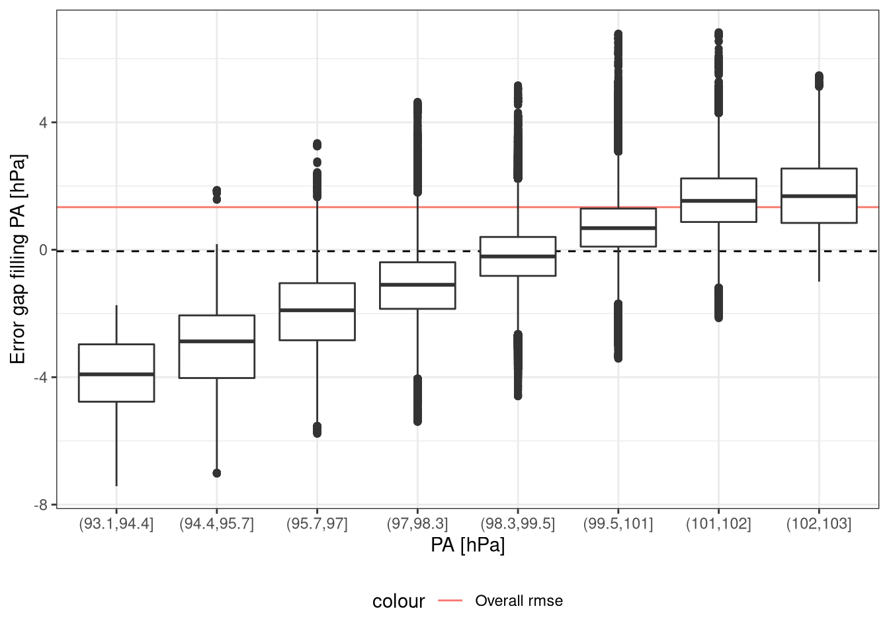
RMSE fo different values
Expand
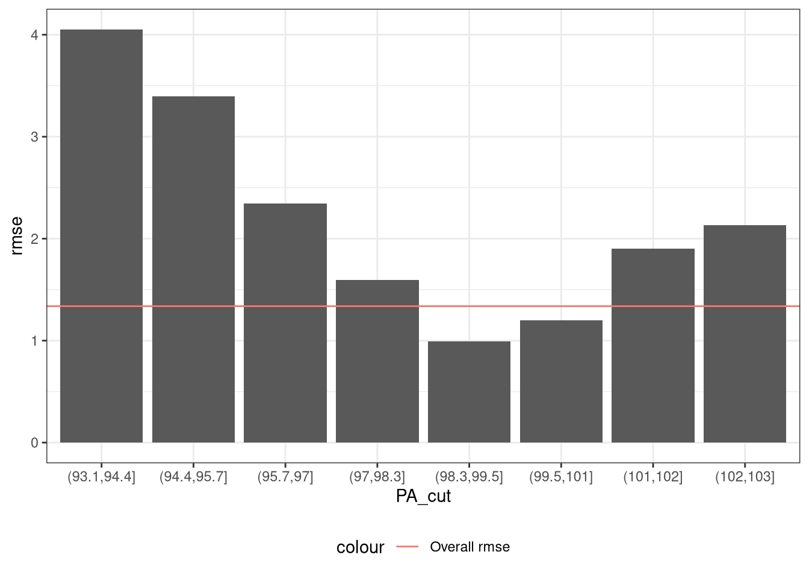Distribution filled vs measurements
PA distribution of measured and gap filled values for different gap lengths.
| Version | Author | Date |
|---|---|---|
| 4e3acee | Simone Massaro | 2022-07-05 |
Distribution RMSE
Expand
Distrubution of RMSE for a sample of gap lengths (in hours)
| Version | Author | Date |
|---|---|---|
| 4e3acee | Simone Massaro | 2022-07-05 |
Multiple missing variables
Conclusion
R version 4.1.3 (2022-03-10)
Platform: x86_64-redhat-linux-gnu (64-bit)
Running under: Fedora Linux 36 (Workstation Edition)
Matrix products: default
BLAS/LAPACK: /usr/lib64/libflexiblas.so.3.2
locale:
[1] LC_CTYPE=en_US.UTF-8 LC_NUMERIC=C
[3] LC_TIME=en_GB.UTF-8 LC_COLLATE=en_US.UTF-8
[5] LC_MONETARY=en_GB.UTF-8 LC_MESSAGES=en_US.UTF-8
[7] LC_PAPER=en_GB.UTF-8 LC_NAME=C
[9] LC_ADDRESS=C LC_TELEPHONE=C
[11] LC_MEASUREMENT=en_GB.UTF-8 LC_IDENTIFICATION=C
attached base packages:
[1] stats graphics grDevices utils datasets methods base
other attached packages:
[1] furrr_0.2.3 future_1.24.0 xfun_0.30 lubridate_1.8.0
[5] Metrics_0.1.4 forcats_0.5.1 stringr_1.4.0 dplyr_1.0.9
[9] purrr_0.3.4 readr_2.1.2 tidyr_1.2.0 tibble_3.1.7
[13] ggplot2_3.3.5 tidyverse_1.3.1 workflowr_1.7.0
loaded via a namespace (and not attached):
[1] fs_1.5.2 bit64_4.0.5 httr_1.4.2 rprojroot_2.0.3
[5] tools_4.1.3 backports_1.4.1 bslib_0.3.1 utf8_1.2.2
[9] R6_2.5.1 DBI_1.1.2 colorspace_2.0-3 withr_2.5.0
[13] prettyunits_1.1.1 tidyselect_1.1.2 processx_3.5.3 bit_4.0.4
[17] compiler_4.1.3 git2r_0.30.1 cli_3.3.0 rvest_1.0.2
[21] xml2_1.3.3 labeling_0.4.2 sass_0.4.1 scales_1.2.0
[25] hexbin_1.28.2 callr_3.7.0 digest_0.6.29 rmarkdown_2.13
[29] pkgconfig_2.0.3 htmltools_0.5.2 scico_1.3.0 parallelly_1.31.0
[33] dbplyr_2.1.1 fastmap_1.1.0 highr_0.9 ggthemes_4.2.4
[37] rlang_1.0.3 readxl_1.4.0 rstudioapi_0.13 jquerylib_0.1.4
[41] generics_0.1.2 farver_2.1.0 jsonlite_1.8.0 vroom_1.5.7
[45] magrittr_2.0.3 Rcpp_1.0.8.3 munsell_0.5.0 fansi_1.0.3
[49] lifecycle_1.0.1 stringi_1.7.6 whisker_0.4 yaml_2.3.5
[53] grid_4.1.3 parallel_4.1.3 listenv_0.8.0 promises_1.2.0.1
[57] crayon_1.5.1 lattice_0.20-45 haven_2.4.3 hms_1.1.1
[61] knitr_1.38 ps_1.6.0 pillar_1.7.0 codetools_0.2-18
[65] reprex_2.0.1 glue_1.6.2 evaluate_0.15 getPass_0.2-2
[69] modelr_0.1.8 vctrs_0.4.1 tzdb_0.3.0 httpuv_1.6.5
[73] cellranger_1.1.0 gtable_0.3.0 assertthat_0.2.1 broom_0.8.0
[77] later_1.3.0 globals_0.14.0 ellipsis_0.3.2 here_1.0.1